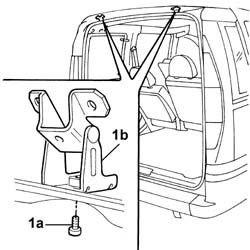

7015A24 tailgate hinges - repair or replace with tailgate removed
- Path
- Procedures > 70 FITTINGS > 7015 TAILGATE/ > 7015A tailgate assembly > 7015A24 tailgate hinges - repair or replace with tailgate removed
- Kind
- repair procedure (removal / refitting; the operation number is the code)
- Applies to
- all engines; all production periods
- Interactive page
- https://sloeber94.github.io/elrnDB-fDbl/en/#/2585033
Applies to: all engines; all production periods; only with equipment: Doblò trim level
 Removing
Removing
 Refitting
Refitting1. Undo bolt (1a) and remove hinge (1b).

Applies to: all engines; all production periods; only with equipment: Doblò trim level
Refitting
RemovingPosition the hinge and tighten the retaining bolts to torque, body side.
 | Fastening | Component | Ø | Value (daNm) |
|---|---|---|---|---|
- | - | - | - | - |
Carry out the same operation for the remaining hinge.